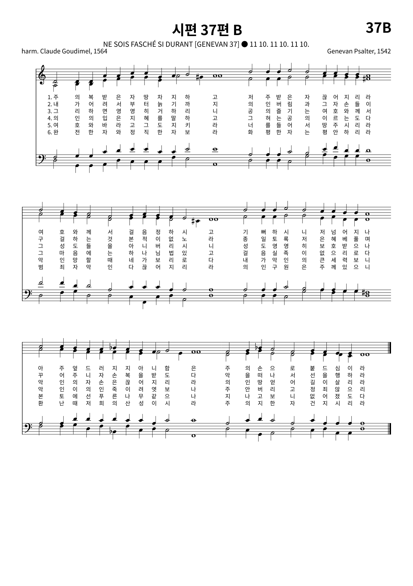

Psalm 37B
NE SOIS FASCHÉ SI DURANT [GENEVAN 37] · 11 10. 11 10. 11 10.
English title: Fret Not Yourself because of Evildoers
Tune: Genevan Psalter, 1542 · Harmony: Claude Goudimel, 1564 · Lyrics: Korean adaptation of Psalm 37 from the Korean Revised Version (AI draft adaptation · not yet theologically reviewed) · 6 stanzas
Psalm 37 is divided into 2 tunes: A B · This tune contains stanzas 8–13 of the Psalm 37 lyrics.
Score PDF MusicXML (for printing) MusicXML (for accompaniment, with prelude and repeats) Read Psalm 37 (Korean Revised Version)
Score
← Psalm 37A ListAccompaniment (in preparation)Psalm 38A →
Lyrics (Korean)
Stanza 1
주의 복 받은 자 땅 차지하고
저주 받은 자 끊어지리라
여호와께서 걸음 정하시고
기뻐하시니 저 넘어지나
아주 엎드러지지 아니함은
주의 손으로 붙드심이라
주의 복 받은 자 땅 차지하고
저주 받은 자 끊어지리라
여호와께서 걸음 정하시고
기뻐하시니 저 넘어지나
아주 엎드러지지 아니함은
주의 손으로 붙드심이라
Stanza 2
내가 어려서부터 늙기까지
의인 버림과 그 자손들이
구걸하는 것 본 적이 없노라
종일토록 저 은혜 베풀며
꾸어 주니 자손 복을 받도다
악을 떠나서 선을 행하라
내가 어려서부터 늙기까지
의인 버림과 그 자손들이
구걸하는 것 본 적이 없노라
종일토록 저 은혜 베풀며
꾸어 주니 자손 복을 받도다
악을 떠나서 선을 행하라
Stanza 3
그리하면 영영히 거하리니
공의 즐기는 여호와께서
그 성도들을 아니 버리시니
성도 영영히 보호 받으나
악인의 자손은 끊어지리라
의인 땅 얻어 길이 살리라
그리하면 영영히 거하리니
공의 즐기는 여호와께서
그 성도들을 아니 버리시니
성도 영영히 보호 받으나
악인의 자손은 끊어지리라
의인 땅 얻어 길이 살리라
Stanza 4
의인의 입은 지혜를 말하고
그 혀는 공의 이르는도다
그 마음에는 하나님 법 있고
걸음 실족이 없으리로다
악인이 의인 죽이려 엿보나
주 안 버리고 정죄 않으리
의인의 입은 지혜를 말하고
그 혀는 공의 이르는도다
그 마음에는 하나님 법 있고
걸음 실족이 없으리로다
악인이 의인 죽이려 엿보나
주 안 버리고 정죄 않으리
Stanza 5
여호와 바라고 그 도 지키라
너를 들어서 땅 주시리라
악인 망할 때 네가 보리로다
내가 악인의 큰 세력 보니
본토에 선 푸른 나무 같으나
지나고 보니 없어졌도다
여호와 바라고 그 도 지키라
너를 들어서 땅 주시리라
악인 망할 때 네가 보리로다
내가 악인의 큰 세력 보니
본토에 선 푸른 나무 같으나
지나고 보니 없어졌도다
Stanza 6
완전한 자와 정직한 자 보라
화평한 자는 평안하리라
범죄자 악인 다 끊어지리라
의인 구원은 주께 있으니
환난 때 저희의 산성이시라
주 의지한 자 건지시리라
완전한 자와 정직한 자 보라
화평한 자는 평안하리라
범죄자 악인 다 끊어지리라
의인 구원은 주께 있으니
환난 때 저희의 산성이시라
주 의지한 자 건지시리라